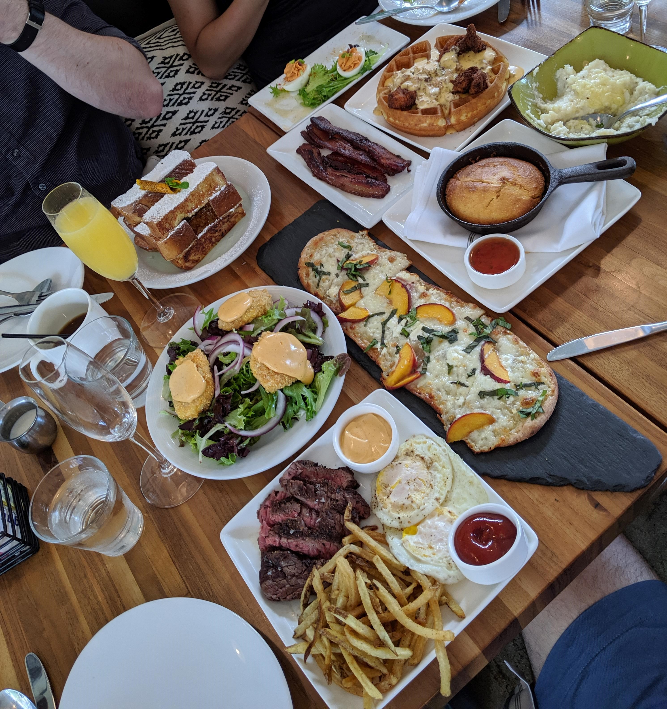

Annapolis trip
I made an overnight trip to Annapolis to meet up with my friends who are dog sitting the cutest dogs.
{kind=link}
{kind=link}
The family also has a cat, but she spends a lot of time outside and typically avoids new people, so I don't have any cat photos.
After greeting the dogs and dropping off our bags, we headed out to explore the town. We stopped at a restaurant for some dinner. They're "thing" is pickled dishes — the restaurant is called Preserve — but the assortment of pickled veggies was my least favorite dish we tried. The stand out dishes were the ribs and the fried kale salad. I could do those all day. Unfortunately, the waiter refused to serve drinks to those of us who still carry a vertical license.
After dinner, we went over to another restaurant for some drinks. Two of us got whiskey flights — some of which were difficult to finish — and the other two got cocktails. The Elijah Craig 7-year bourbon was my favorite of the ones we sampled. And now I know all rye is disgusting.
We drove back to the house (after waiting a responsible amount of time to sober up) to let the dogs out and play some Switch games accompanied by margaritas. It was a Mario themed night. Mario Kart followed by Mario Party. I like to think my Mario socks imbued me with every video gaming powers. I won the Mario Kart Grand Prix. Mario Party was a mix of co-op, team, and free-for-all minigames, so there was no "winner" for the night. The overall mode we played was a 4-player co-op style of rafting down a river, so in the end, we were all winners.
We got brunch this morning. It was so much food. After we all filled our stomachs to the point of near-bursting, we still had enough leftovers for another hearty meal.
Once we got back to the house, I asked to try Diablo 3 since my friends were talking about how they have been enjoying the Switch version. However, three of us immediately passed out on the couches before my friend could even get the game loaded up, which he stayed up to play solo-style.